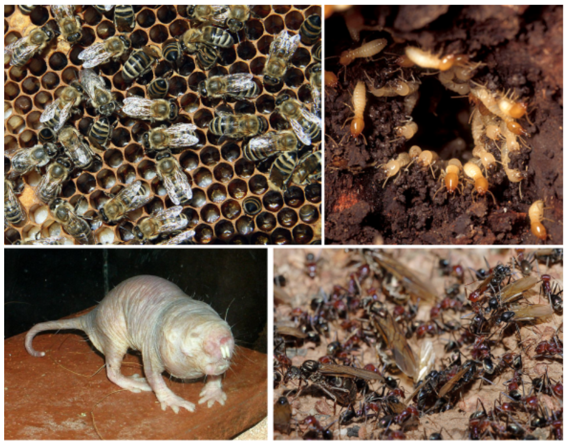
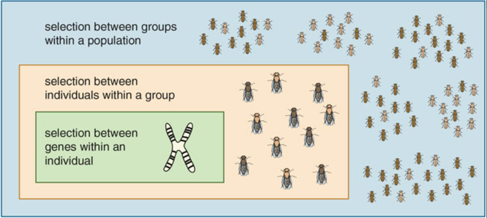

Eusociality
Contents
Eusociality¶
Responses template if you need it
{kind=link}
Defining Features
Reproductive altruism
Cooperative parental care
Multi-generational
Living in groups
Ultimate Explanations¶
Reproductive altruism is the key feature making eusociality difficult to understand from an evolutionary perspective.
Some evolutionary models can explain cooperative altruism when the cost to the social donor is low enough (for example, the snowdrift model). However, the loss of reproduction seems effectively like an infinitely high cost. If evolutionary fitness is defined by how much you pass your genes to the next generation, not producing any offspring would result in zero fitness, no matter what factors you were able to increase your individual (“lifetime”) fitness.
There are lots of alternate models that aim to make sense of eusociality and reproductive altruism.
Group Level selection¶
“The process known as group selection was once accepted unthinkingly, then was widely discredited.” - Edward Wilson and David Wilson1. The underlying question-“Can biological traits evolve for the good of the group?”-is a heavily debated concept.
Wilson and Wilson are trying to pave the way for reconsidering group selection as a predictive force in understanding the evolution of behavior.
To think clearly about group selection, it is important to compare the survival and reproduction of individuals in the right way. Selection between individuals within groups favors cheating behaviors, even at the expense of the group as a whole (as seen in the game theory models). Selection between groups within the total population favors behaviors that increase the relative fitness of the whole group—although these behaviors, too, can have negative effects at a still-larger scale.
{kind=link}
The balance between levels of selection can tilt in either direction. Wilson and Wilson make the point that there is no single formula; answers must be worked out on a case-by-case basis1.
Kin Selection¶
In the form of a quantitative genetics model (see margin), the frequency of an altruistic allele will increase if:
where c is the factor(s) that decreases the fitness of the donor for an altruistic act, b is the factor(s) that increases the fitness of the recipient for an altruistic act, and r is the relatedness between the donor and recipient of the altruistic act. The first derivation of this model (based on “Price’s equation) was done by Hamilton3.
Basically, this “Hamilton’s rule” states that, if you help someone that shares a lot of your genotype (is very related to you), then your genotype will effectively be passed on through them if you help them reproduce.
While it has been cited a lot and pushed heavily in classic textbooks, the examples providing evidence for this model are debated, and some debate its function as a predictive model at all[^Nowack].
Reproductive Potential¶
The ‘canonical Hamilton’s rule’ lacks demographic structure. Akcay and Van Cleve (2015)4 explain a different model that re-evaluates the importance of reproductive potential on the impact of relatedness in heterogeneous populations. From this model, we can infer a role for polyphenisms versus polymorphisms in the inheritance of altruism and selfishness.
{kind=link}
Fig. 131 Example of a heterogeneous pupulation. Members of the three honeybee castes are morphologically and behaviorally distinct. Only the queen reproduces¶
Population heterogeneity does not have to be so dramatic. In lots of populations, there are simply dominant and submissive individuals. Often, the submissive individuals are “altruistic” to the dominant individuals but receive no reciprocation.
For example, male wild turkeys pair up during the mating season to compete for females. The lek is the mating battleground where males strut to attract females. To strut, a male holds their tail upright while fanning out their feathers, drops their wings so their primary feathers are touching the ground, makes their feathers erect to appear as large as possible, and pulls their neck inward. The role of the submissive male of each pair is to fend off other competing male pairs. If the pair succeeds in attracting a female, only the dominant turkey actually mates.
So why doesn’t the submissive phenotype get eliminated by natural selection? How can a male in a lek who never succeeds in mating with a female nevertheless “benefit” by their participation? Both of these questions assume potentially incorrect thinking about the proximate and ultimate mechanisms of behavior – instead, the submissive male might not need to ever “benefit”, and selfish and altruist phenotypes may be linked rather than mutually exclusive.
In Akcay and Van Cleve’s model, fitness is averaged across the social environments and demographic states in which members of a lineage find themselves. In other words, fitness belongs to the gene lineage, not to the individual.
The frequency of an altruistic gene will increase if5:
where \(\sigma\) is the fraction of submissives in the population, \(c_d\) is the cost to a dominant individual for helping a subordinate (and vice-versa for \(c_s\)), \(b_d\) is the benefit to the dominant when it is helped by a subordinate (and vice-versa for \(b_s\)), and \(r\) is the relatedness between dominant and subordinate individuals.
This model seems to require that altruism and selfishness are polyphenisms.
⏳ 3 min
Q1 : If dominants never help subordinates, what is the value of \(c_d\) and \(b_s\)?
Q2 : Assume the population has an equal number of dominants and subordinates so that \(\sigma = 1 - \sigma\) (ie. turkey lekking pairs). Simplify the model equation given this assumption and the assumption that dominants never help subordinates.
⏸️ PAUSE here for class-wide discussion
Ecological Factors¶
Ecological origins mechanisms for (eu)sociality predict different worker sex ratios than relatedness mechanisms.6
{kind=link}
Fig. 132 Predictions of relatedness and ecological hypotheses on the sex ratio of the worker caste.6¶
The relatedness hypothesis suggests that, in haplodiploid species, a higher relatedness between sisters (75% f:f vs 25% f:m or 50% m:m) favors female workers. In contrast, in diploid species, there is no relatedness asymmetry among siblings, and both sexes are equally favored to be workers. This hypothesis focuses on the possible importance of variation in the relatedness (r) term in Hamilton’s rule.
The ecology hypothesis suggests that the sex of the worker caste depends upon the ecological (economic) benefit of cooperation and eusociality. For example, either the cooperative rearing of brood when it is likely that either the offspring or the parent will die before parental care is completed (life insurance) or colony defense when the living environment requires social defense (fortress defense).
If workers rear brood, then we would expect the workers to be drawn from the sex or sexes that provided parental care in the ancestral solitary species, which is usually females.
If workers defend the colony, and neither sex is preadapted to be a soldier, then we would expect the workers to be drawn from both sexes.
This ecological origins hypothesis focuses on the possible importance of variation in the benefit (b) and cost (c) terms in Hamilton’s rule. It is not mutually exclusive to the theory of kin selection more generally.
Ross et al (2013)6 performed a meta-analysis to test these hypotheses (Figure 133 and 134).
{kind=link}
Fig. 133 Open circles and filled squares represent diploid versus haplodiploid taxa, respectively, while the number within each square/circle shows the number of independent origins of eusociality (according to Wilson’s definition of eusociality) within each clade. The color of the icon represents the sex ratio of workers—half blue, half pink for unbiased and pink for female only.6¶
{kind=link}
Fig. 134 The probability of having female only helpers, as opposed to an unbiased mixture of males and females (where 0 represents an unbiased helper sex ratio), for haploidiploid and diploid taxa in the different ecological scenarios.6¶
⏳ 3 min
Q3: Which of the following would you infer given these results, and why?
A) the evolution of eusociality was influenced more by ecological selective pressures on altruism than by relatedness among individuals of a population
B) the evolution of eusociality was influenced more by relatedness among individuals of a population than by ecological selective pressures on altruism
⏸️ PAUSE here for class-wide discussion
Origins of cooperative parental care¶
Ammophila (digger wasps) are non-social. However, their behavior provides clues to a potential evolutionary mechanism for cooperative parental care7. All ammophila lay single eggs in nests stocked with food provisions.
{kind=link}
However, some species mass provision each nest, while other species progressively provision their nests.
Mass provisioners work on one nest at a time, fully provisioning each in one shot and sealing the nest.
Progressive provisioners simultaneously work on 2-5 nests at a time, initiating all of the nests on the same day and then coming back each day to re-provision.
Progressive provisioning enables the opportunity to intervene or terminate investment early if offspring show signs of failing. If an offspring does not look like it will make it, the wasp can save otherwise wasted energy investment in it. However, progressively provisioned offspring are more at risk of parasitism because the nest keeps getting reopened to reprovision and is unattended while the parent is foraging for provisions. More offspring would survive if the parental wasp had help guarding the nest from parasites while it was tending to other nests.
Other Selective Pressures?¶
Case Study: Mole rats¶
{kind=link}
Fig. 136 Simplified phylogeny for the African mole-rats indicating main clades/genera. Numbers in parentheses indicate current estimates of species numbers in each genus. From Faulkes and Bennett (2021)¶
Note that the eusocial naked mole-rat at the base of the tree and the eusocial Damaraland mole-rat at the top of the tree are separated by a number of common ancestors that vary in degrees of sociality. From the eusocial naked mole-rat at the base of the tree, sociality was lost, and then evolved again. Eusociality has evolved independently twice within the same family.
By comparing the character mapping of social behavior among this phylogeny with the mapping of ecological factors, we find that eusociality is associated with arid versus mesic habitats.
{kind=link}
Fig. 137 Phylogeographical patterns of genetic divergence and speciation in African mole-rats (Family: Bathyergidae) in the context of rift valley formation in Africa (indicated by brown lines). African mole-rats are distributed in a range of habitats across sub-Saharan Africa, and display a range of social and reproductive strategies. From Faulkes et al (2004)¶
Proximate Mechanisms¶
Neural¶
⏳ 5 min
Q4: What behaviors and/or might be modified to support eusocial versus solitary or group lifestyles? And how, at a proximate level, could these modifications be achieved?
⏸️ PAUSE here for class-wide discussion
Social neuroscience is a rapidly expanding and integrative field of study. Research that focuses on the neurobiology of eusociality per se is lacking.
What we do know so far is that social processes cannot be localized to one brain region-they are highly distributed systems.
There is more known about the neurobiology of related behaviors, for example pair bonding in monogamous species. Research has found that, in voles, oxytocin and vasopressin hormonal systems play a large role. Pair bonding is not a component of eusociality per se, but at least in mammals, we find that cooperative breeding (a precondition for eusociality) is restricted to monogamous species. Comparative studies of oxytocin and vasopressin receptor distribution among African mole-rats have revealed both similarities and differences with reference to voles.
The only other neural substrate that has been investigated in African mole-rats in a detailed comparative context is the corticotrophin-releasing factor (CRF) family of hormone peptides and receptors8. This study found clear species differences in the anatomical pattern of receptor/ligand binding between naked mole-rats and Cape mole-rats (a solitary species) which are suggested to reflect differences in affiliative behavior.
Genetic and Development¶
In the following examples, environmental signals are used to modulate behavioral phenotype.
⏳ 5 min
Q5: What do these studies imply about the inheritance of altruist and selfish genes/alleles? Are altruist and selfish likely different alleles of the same gene(s) or controlled by different (sets of) genes?
⏸️ PAUSE here for class-wide discussion
Additional Resources¶
Faulkes, C., & Bennett, N. (2016). Damaraland and naked mole-rats: Convergence of social evolution. In W. Koenig & J. Dickinson (Eds.), Cooperative Breeding in Vertebrates: Studies of Ecology, Evolution, and Behavior (pp. 338-352). Cambridge: Cambridge University Press. (or access via share link
Jonathan Birch (2017) Hamilton’s Rule as an Organizing Framework
Field, J., Brace, S. Pre-social benefits of extended parental care. Nature 428, 650–652 (2004).
- 1(1,2)
- 2
- 3
Jonathan Birch (2017) Hamilton’s Rule as an Organizing Framework
- 4
Akcay and Van Cleve (2016) There is no fitness by fitness, and the lineage is its bearer
- 5
The derivation of this equation comes from Taylor and Frank (1996) How to make a kin selection model and is explained in this format in Akcay and Van Cleve (2016) There is no fitness by fitness, and the lineage is its bearer.
- 6(1,2,3,4,5)
- 7
Field, J., Brace, S. Pre-social benefits of extended parental care. Nature 428, 650–652 (2004).
- 8